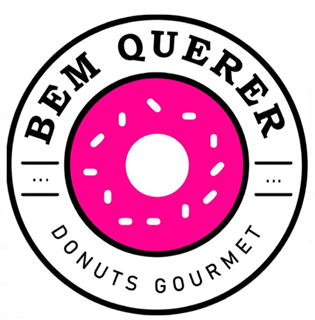
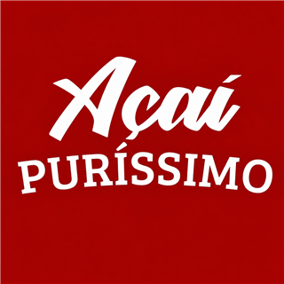
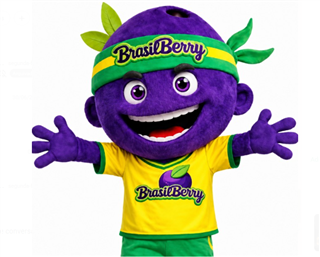
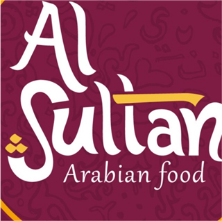
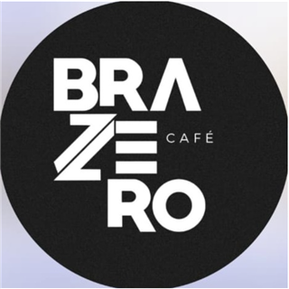

Conheça quem está
por trás de cada marca
Cada edição da revista Topo do Franchising traz a trajetória de uma rede do ecossistema, contada por quem a fundou.
 Topo do Franchising
Céu de Minas
Marca · Pedro Alex Lopes de Arruda
"A gente não quer simplesmente vender queijo. Quer levar para mais pessoas aquilo que Minas tem de melhor."
Topo do Franchising
Ponto Alpha Café
Fundadores · Lucas Silva & José Ricardo
"Nós acreditamos em pessoas. O café foi o meio que a gente encontrou."
Topo do Franchising
Lave & Pegue
Fundadores · Bruno Leite & Alexandre Figueiredo
"O processo era simples, mas ninguém fazia com o cuidado que a gente colocou."
Topo do Franchising
Mikro Market
Marca · Fundadores
"Transformar o minimercado do condomínio em um modelo de rede."
Topo do Franchising
Essence Market
Fundadores · Sâmio Silva & Yhanara Carvalho
"Do minimercado de condomínio para uma rede de franquias."
Topo do Franchising
Céu de Minas
Marca · Pedro Alex Lopes de Arruda
"A gente não quer simplesmente vender queijo. Quer levar para mais pessoas aquilo que Minas tem de melhor."
Topo do Franchising
Ponto Alpha Café
Fundadores · Lucas Silva & José Ricardo
"Nós acreditamos em pessoas. O café foi o meio que a gente encontrou."
Topo do Franchising
Lave & Pegue
Fundadores · Bruno Leite & Alexandre Figueiredo
"O processo era simples, mas ninguém fazia com o cuidado que a gente colocou."
Topo do Franchising
Mikro Market
Marca · Fundadores
"Transformar o minimercado do condomínio em um modelo de rede."
Topo do Franchising
Essence Market
Fundadores · Sâmio Silva & Yhanara Carvalho
"Do minimercado de condomínio para uma rede de franquias."
Encontre a sua franquia
Escolha um segmento para ver as redes, os modelos de operação e as faixas de investimento de cada marca.
BM Vagas
Serviços e Outros Negócios
Vendeu 12 franquias nas últimas semanas

Bem Querer
Alimentação
Vendeu mais uma franquia (29/08)
Slimcenter
Saúde, Beleza e Bem-estar
Vendeu mais uma franquia (28/08)
Céu de Minas
Alimentação
Queijo neve com favor de mel

Açaí Puríssimo
Alimentação
Rede de açaí zero açúcar em Brasília

Brasil Berry
Alimentação
Em expansão pelo Brasil

Al Sultan
Alimentação
Culinária árabe em rede

Brazero Café
Alimentação
Cafeterias em expansão
O que está acontecendo
nas redes agora
Visão de Dono
Conheça os fundadores de cada marca.
Como o mercado brasileiro está crescendo
Números e movimentos do franchising como um todo: o setor inteiro, não apenas as redes do ecossistema XFranchise.
Os segmentos que mais crescem
- Alimentação+19%
- Saúde, Beleza e Bem-estar+14%
- Serviços Automotivos+11%
- Educação+9%
Dois caminhos para escalar
Seu negócio funciona. Agora ele pode se transformar em uma rede.
Para quem já tem uma operação validada e quer estruturar a expansão pelo franchising, do modelo ao primeiro franqueado.
Quero transformar meu negócio em franquiaSua franqueadora pode crescer muito mais.
Para redes que já existem e precisam acelerar marketing, vendas, expansão, gestão e desenvolvimento da rede.
Quero escalar minha franqueadora